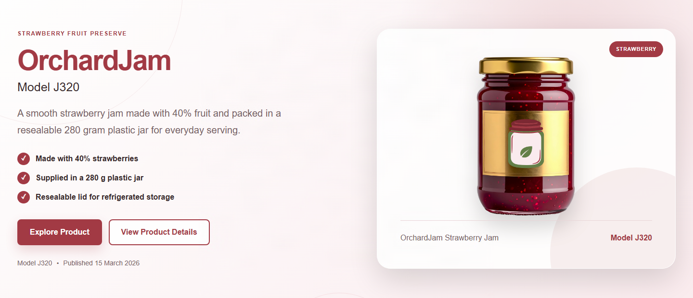

40% strawberry fruit content
Strawberries account for 40% of the stated product content.

Credentials applied with: Adobe Content Authenticity
Asset type: PNG image with embedded Content Credentials
Credential location: Embedded in the asset file
Last verification: Passed on 19/11/2026 using Content Credentials Verify
Verify Content CredentialsCredentials applied with: Adobe Content Authenticity
Asset type: PNG image with embedded Content Credentials
Credential location: Embedded in the asset file
Last verification: Passed on 19/11/2026 using Content Credentials Verify
Verify Content CredentialsMade for everyday serving
BerryBrook OrchardJam J320 is a strawberry jam made with 40% fruit.
The product is supplied in a 320 gram resealable glass jar and provides 238 kilocalories and 46 grams of sugar per 100 grams.
After opening, keep the jar refrigerated and use the jam within four weeks.
Product highlights
OrchardJam J320 combines 40% fruit content with a resealable glass jar and straightforward refrigerated storage.
Strawberries account for 40% of the stated product content.
The net weight is 320 grams.
The screw-top glass jar can be resealed after serving.
Refrigerate the jam after opening.
Use the refrigerated product within four weeks of opening.

Serving ideas
Use a clean utensil to remove the required amount of jam and reseal the jar after serving.
Serve as a fruit spread on bread or toast.
Use a clean, dry utensil when serving.
Reseal and refrigerate the jar promptly.
Key product information
OrchardJam J320 states a strawberry fruit content of 40%.
Product details
Product, nutrition, packaging and storage information for BerryBrook OrchardJam J320.

| Product name | OrchardJam |
|---|---|
| Model | J320 |
| Product category | Strawberry jam |
| Fruit content | 40% strawberries |
| Net weight | 320 g |
| Energy | 238 kcal per 100 g |
| Sugar | 46 g per 100 g |
| Packaging | Resealable glass jar |
| Storage before opening | Store in a cool, dry place |
| Storage after opening | Refrigerate and use within 4 weeks |
| Country of manufacture | United Kingdom |
| Product code | BB-J320-2026 |
Serving guidance
Follow these steps when opening, serving and storing the jam.
Do not use the product if the seal or jar is damaged.
Remove the required amount with a clean, dry spoon or knife.
Close the screw-top lid securely after serving.
Keep refrigerated and use within four weeks after opening.
Important information
Follow these precautions when handling and storing OrchardJam J320.
Do not consume the jam if the packaging is damaged or the product shows signs of spoilage.
Questions and Answers
Find answers about fruit content, net weight, nutrition, packaging and storage.
OrchardJam J320 states a strawberry fruit content of 40%.
The jar contains 320 grams of jam.
The stated energy value is 238 kilocalories per 100 grams.
The stated sugar content is 46 grams per 100 grams.
OrchardJam J320 is supplied in a resealable glass jar.
Refrigerate the jar and use the jam within four weeks.